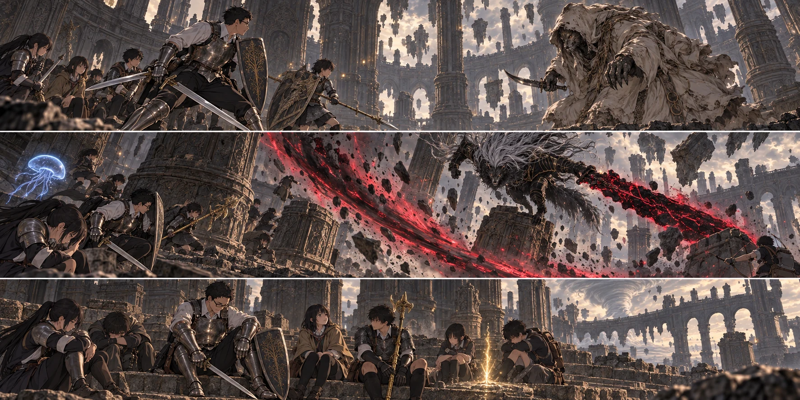

DAY88 / TURN1−98
届かなかった、あと一歩。

先生「今日はここまでだ。帰る約束も、残っている」
【DAY88｜橋の門番】十三人が通り切るまで、敵が同じ方を向いてくれる保証はない。先生は橋の坂を見上げ、走り抜ける案を止めた。「ここで切り離して倒す。そのあと、一度戻って整える」。以前の門番との戦いを、直人も健太も覚えていた。炎を吐く馬。盾を掲げた後に落ちる雷。知っているから怖くないのではなく、怖がる場所を選べた。
【局所制圧｜2d6＝2・2＋5＝9】先生は雷の防護を自分へ掛け、馬の正面から斜めへ動いた。花と千夏は同じ射線へ並ばず、撃った後の位置を変える。陽太の盾へ衝撃が走り、膝が石畳を擦った。健太が横へ入り、陽太を一歩下げた。赤瓶を飲む時間を、ほかの者が作った。
最後は馬が向きを変えた隙だった。大地の黄金の刃と直人の大竜爪が届く。先生は追い込もうと全員を前へ呼ばず、相手の逃げる方へ自分だけを移した。騎士が崩れ、橋に空いた道が残った。異形の竜の防具一式を拾う。今すぐ誰かへ着せるには重さと動きの確認が要る。今日は包んで運ぶ。
十三人は大橋の脇へ戻り、休息した。陽太の傷を治し、瓶と術を整える。ここから先の挑戦は、この休息を区切りにする。門番を倒した消耗を抱えたまま、次の強敵へ突っ込む日にはしなかった。
【獣の司祭】広い石の床の向こうで、擦れた衣が動いた。低い姿勢の獣が、短い刃をこちらへ向ける。声は人の言葉なのに、喉の奥に別の音が混じっていた。「その群れで、封を破るつもりか」。先生は盾を上げた。封じられた死を奪うために来た、という言い方をされると、自分たちが守ろうとしている命との距離が急にわからなくなった。
返事をする間はなかった。地を削る力が走る。葵が開戦前に掛けた恵みは前衛六人へ、大地の誓いは先生と直人と大地へ届いていた。どちらも切れる時がある。先生はクララを側方に呼び、司祭の視線が動くわずかな時間を、皆に渡した。
【第一局面｜2d6＝3・2＋4＝9】健太が前へ出た時、短い刃が盾の脇へ滑った。身体を引いたが、浅い傷を避け切れない。先生が一歩寄り、司祭の向きを引き取る。健太は離れて赤瓶を一本飲んだ。敵は遅くない。先生を追っていると思えば、次には盾を持つ別の者へ刃を向けていた。
陽太は槍を両手へ持ち替えかけて止めた。黒炎を立ち上げるだけの隙が見えない。使えば強いと知っていることと、ここで使えることは違った。「まだです」。自分で声にして、盾を前へ戻した。先生はそれを聞いて頷く余裕もなく、飛んだ石の外へ足を抜いた。
それでも、陸と大地の攻撃が届き、矢が追い詰める。司祭が腕へ刃を向けた瞬間、先生は後ろへ合図した。隠していたものが、解かれる。黒い刃に赤い光が走り、ぼろ布の奥から甲冑と白い毛並みが現れた。
【黒き剣、マリケス】「これより先へは、渡さぬ」。それは声というより、ずっと一つの仕事だけを続けてきた者の拒絶に聞こえた。先生は、この相手を倒せば死が解き放たれるという先読みを思い出した。勝った後の世界まで、今と同じとは限らない。それでも、終わりへ進む道はこの奥にある。
【第二局面｜2d6＝6・1＋4＝11】黒い影が柱へ跳んだ。先生は剣を上へ向けず、床へ落ちる刃の先を見た。「一か所に寄るな！」。赤黒い軌跡が、さっきまで人のいた場所を裂く。皆が別々の柱へ回り、着地した瞬間へ直人と陸が一撃を入れた。花の矢は、先生が離れてから届いた。
クララはまだ側方にいた。倒されなかったことだけで、先生は少し救われた。毒が入ったはずだと勝手に数えることはしない。今ここにいる仲間が、一度こちらへ向くはずだった顔を別へ向けてくれた。それだけでも次の一歩があった。
【第三局面｜2d6＝1・3＋4＝8】あと一撃ずつ、繋げれば届く。そう思った時に、マリケスは待ってくれなかった。直人が引くより先に衝撃が走り、床へ膝をつく。大地が前へ出て、先生がその横を埋めた。直人は立てた。赤瓶も使えた。けれど、十三人がもう一度攻撃へ揃うまでの間に、敵は柱へ戻っていた。
葵の恵みも大地の誓いも、もう続いてはいない。残っている回復と、追いかけるために必要な足を見比べる。先生は、無事だった第二局面だけを根拠に次も大丈夫だと思いそうになった。それが一番危なかった。
【判定の帰結】進捗は一、二、一の合計四。事前に決めた勝利条件の五に届かなかった。ここから都合のよい追加の一振りは足さない。先生は生徒たちの返事を確かめ、既定の挑戦放棄を選んだ。「今日はここまでだ。帰る約束も、残っている」。
霧を歩いて抜けたわけではなかった。戦闘中に好きな祝福へ飛ぶ力を得たわけでもない。この世界で既に確かめたやり直しが、門番を倒した後の休息地点へ十三人を戻した。マリケスの傷と、この挑戦中に使った瓶や矢は戻る。過ぎた日は戻らない。武具に刻まれた実戦の傷みも、修繕するまでは残る。
【大橋の脇】戻った直人は、剣の届いた所へ手を当てた。傷はない。それでも、避けるのが遅れた瞬間は覚えている。先生はそこに立ち、全員の名を呼んだ。十三人の返事が揃う。今日は勝てなかった。誰も死なずに、勝てなかったことを持ち帰れる。それを、次へ使わなければならない。
黒炎の渦は使わずに終わった。陽太はそれを先生へ報告した。先生は「使う隙を作れなかった」と自分の手帳にも書いた。使わなかった生徒だけの失敗にしてしまえば、次も同じ場所で止まる。
教会では第三隊が三頭分を持ち帰っていた。判定は五と三、補正込み十二。離れた場所の一日は、こちらの挑戦放棄で消えていない。財布は六千九百四十四ルーン。門番の報酬と防具は得たが、マリケスの戦利品はない。王都も灰には変わっていない。
【DAY88｜夜】明日は教会へ戻る。残りは十一行動日、そのうち九十日は赤月だ。ここで帰還を延ばせば、一度の勝負のために教会の二十人へ別の危険を負わせる。先生は大橋の祝福を振り返り、次にここから始められることを確かめた。帰ることが、進めなくなることではなかった。
今回の判定記録
| 判定 | 出目 | 補正 | 合計 |
|---|
| gate | 2+2 | 5 | 9 |
| clergyman | 3+2 | 4 | 9 |
| blackBlade | 6+1 | 4 | 11 |
| finish | 1+3 | 4 | 8 |
| base | 5+3 | 4 | 12 |
抽選前の条件 · 抽選結果